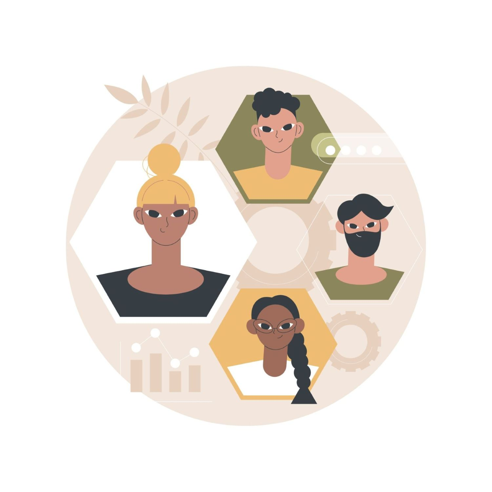

Diversity and Inclusion In The Workplace
Promoting diversity, building equitable, inclusive and stronger workforces
Promoting diversity, building equitable, inclusive and stronger workforces
Diversity and inclusion (D&I) are essential components of a thriving workplace.
Diversity refers to the presence of differences within a given setting, encompassing various dimensions such age, ethnicity, gender and race.The concept of inclusion encompasses the creation of environments where all individuals feel valued, respected, and able to participate fully.
The distinction between diversity and inclusion is the diversity focusses on representation and inclusion focusses on belonging.
The guide provides users with a basic concepts and guidance on how to implement diversity and inclusion in the workplace.
Users seeking straightforward information and tips may benefit from this website.
Learn MoreTeams with varied perspectives and experiences often outperform homogeneous teams.
This leads to better decision-making, innovation, and problem-solving.
Varied experiences lead to innovative solutions that add value to the organization.
Innovation drives growth and helps companies stay competitive in a rapidly changing market.
Inclusive workplaces tend to have higher employee satisfaction and retention rates.
Employees who feel valued and included are more likely to stay with the organization.
Learn MoreTraining programs help employees increase in awareness and understanding of their own unconscious biases to foster fairness.
Personnel training enhances knowledge and skills to improve communication and collaboration among diverse teams.
Programs encourage inclusive behaviors that support respect, equity, and inclusivity within the workplace environment
Learn MoreUnconscious biases influence decisions without awareness, impacting fairness and objectivity in organizations.
Identifying Biases actively identifies unconscious biases through assessments and self-awareness initiatives.
Mitigation strategies implement strategies such as blind recruitment and diverse hiring panels to minimize bias in decision-making.
Learn MoreEmployee representation data to track progress and diversity levels across departments and roles within the organization enhances understanding about diversity and inclusion.
Hiring metrics data highlights recruitment effectiveness in attracting diverse talent pools.
Promotion tracking reveals equity in career advancement among diverse groups.
Employee feedback analysis from employees provides insight into the inclusivity and culture of the organization.
Learn More